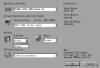
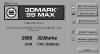
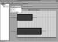
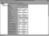
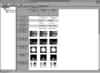

|
|
| 当前位置：电脑报电子版 > 1999 年 > 40 期 > 硬件周刊 > 用3DMark99 Max测试你的显示卡 |
| 《 用3DMark99 Max测试你的显示卡 》 |
| 如何了解一块3D显示卡的好坏？如何才能知道你买的显示卡和朋友的比起来哪个更好？个人的主观思想是不能说明问题的，只有测试能够给你一个客观而相对公正的结果。 测试3D显示卡的软件非常多，从标准的专用测试软件3DWinbench 99、Final Reality、3DMARK 99，以及很受欢迎的Quake系列游戏的TIMEDEMO测试。其中3DMARK 99 MAX这个后起之秀已经成为了当今使用率最高的3D显示卡测试软件了，无论你看《电脑报》评测版的显卡测试，还是互联网上硬件站点的测试和一些个人测试，3DMARK 99 MAX无处不在，其名气甚至盖过了ZDNET的3DWinbench 99。3DMARK 99 MAX如此地受欢迎，当然和它优秀的测试环境和得心应手的测试方法分不开了，想用3DMARK 99 MAX做详细的测试吗？跟我来！ 了解3DMARK 99 MAX 3DMARK 99的测试环境就是在模拟D3D游戏的实际运行，而且支持了基本上所有D3D具有的标准3D特效，反映出来的结果比其它测试软件更接近实际游戏中的表现。3DMARK 99 MAX是3DMARK 99的一个优秀升级版本，比3DMARK 99有了更广泛的支持：全面支持AMD 3DNow!和Intel PⅢ的SEE指令集，进行了3D技术优化，可以明显感觉到带来的性能提升；更复杂的游戏性能测试，增加了更多的多边形、照明、曲面纹理和更多的细节；增加了凹凸纹理贴图（Bump Mapping）的测试，全面支持第四代3D显示卡的此项特效；改进和增强了结果浏览器（Result Browser），方便获得全面的测试结果，并加以分析。使用3DMARK 99 MAX的必备条件： 一块完全支持D3D的3D显示卡 微软的DirectX 6.1或更高的版本 64M或更多的内存（128M才能正常完成所有的测试） 一块300MHz以上的PⅡ或者同等级处理器 获得3DMARK 99 MAX 你可以通过INTERNET访问3DMARK 99的主页http://www.3dmark.com 或者通过ftp://ftp.cdrom.com/pub/3dfiles/utility/3dmark99max.exe 下载，容量为17M。下载获得的版本限制很多，只能使用800×600以下的分辨率、16位彩色和有限的测试项目，你可以到其网站上付19.95美元注册成为3DMARK 99 MAX PRO，并永久享受免费升级，这样获得的完整的3DMARK 99 MAX PRO才可以真正进行测试。 用3DMARK 99 MAX进行测试 具体的测试方法不再多说了，只要你跟着我来做一次测试，你就什么都明白了。我的测试配置：Intel Celeron 366 超频到 550MHz 微星 MSI－6153 440BX 370主板 现代 64M PC100内存 樵风 TNT2 M64 32M 显示卡 使用 nVIDIA内部测试2.31版本的公板驱动程序 首先执行3DMARK 99 MAX，你会看见一个3DMARK 99 MAX的LOGO（如图1），如果你注意看的话会发现左下角还有一个CPU的标志，这是3DMARK 99 MAX在检测你的CPU，如果你用的是PⅢ或者K6－2的话，同样会发现相对应的标志。 进入3DMARK 99 MAX以后，首先要改变Project（项目）的名称，如果你想测试M64 800×600 16位色的模式，你就通过EDIT把默认的“My Project”改名为“M64 800×600 16bit”，这样方便最终数据的生成和对比。 接下来是选择测试项目（Selected Tests）了，这些项目分别是GAME 1——Race一项，GAME 2——First Person一项，Synthetic CPU 3D Speed（测试CPU的速度）一项，Fill Rate（像素填充率）两项，Texture Rendering Speed（纹理贴图速度，从2M到32M）五项，Bump Mapping（凹凸纹理贴图）三项，Texture Filtering Speed（纹理过滤速度）一项，N Pixel Polygons（像素多边形）十项，Image Quality（画面品质）两项，总共的测试项目是26个，默认为全部测试。首先你最好先了解这些测试项目，同时还可以根据自己的需要去更改测试项目，如果你只有64M的内存，你就可以去掉Texture Rendering Speed（纹理贴图速度）中的第五项32M Texture Rendering Speed，因为只有64M内存的话这项是不允许测试的。 然后可以在Display and CPU Settings(如图2)中设置你想要测试的分辨率、颜色数、Z－Buffer、帧缓冲的大小。其中分辨率可以调节的范围是640×480 16bit到1600×1200 32bit，Z－Buffer则根据你的显示卡的支持来调节，比如TNT2可以选择16bit或24bit，而Voodoo3就只能选择16bit。帧缓冲一般都是用三重的（Triple）。我选择的是800×600 16bit、16bit Z－Buffer和Triple。 接下来就可以点击最下面的Benchmark进行测试了（选择DEMO可以看一段非常过瘾的3D演示，不过没有测试结果）。测试完毕后就会出现最终得分：3DMARK的得分4300，CPU 3DMARK的得分5157，选择保存，更多的详细数据可以通过结果浏览器（Result Browser）查看。 这样就完成了第一个测试，我还想再进行第二个800×600 32bit 24bit Z－Buffer模式下的测试，我们可以通过同样的方法，更改相关设置进行测试。这一次3DMARK的得分2688（M64在32位色下速度下降很厉害），CPU 3DMARK的得分5149(如图3)。同样保存结果。 熟练运用结果浏览器 测试完毕后，你会觉得测试非常容易，但是这还不算结束，你现在可以打开3DMARK 99 MAX所带的结果浏览器（Result Browser）观看详细的测试结果了。上面我测试了M64在800×600 16bit和800×600 32bit下的结果，通过两次“OPEN”打开保存的测试结果，3DMARK 99 MAX会自动合并数据，放在一起做对比。首先看见的分数画面（Result）是不是很眼熟？是不是感觉在很多杂志上见过这个画面？对了，那就是经常用在文章上出现的测试结果图(如图4)，不过他们测试结果往往是好几块显示卡放在一起对比，而3DMARK 99 MAX的浏览器可以很方便地自动生成对比图，不用你再去用EXCEL画了（只需要用抓图软件就能搞定）。下拉菜单可以让你很清楚看见26项测试的图表对比图(如图5)。 另一个重要的就是详细测试总列表了（Details），它把你的测试配置和测试结果详细地放在一个列表当中，一目了然。 让人更加满意的是，这些保存的测试数据文件只有几K大小，非常方便朋友之间互相交换和对比，等你买了一块好的显示卡以后，是不是准备向你的朋友炫耀一下？ 画面品质的对比 画面品质的对比(如图6)同样出现在结果浏览器中（遗憾的是不能和朋友分享了），它的品质画面直接来自于测试过程中的抓图，从中你可以很清楚地发现一块显示卡在32bit和16bit画面下的差异，以及不同显示卡之间的画面差异，你还可以通过保存命令把这些样张分离成BMP文件进行更详细的对比，我测试所用的M64能很明显看出来32bit和16bit的差异。说到这里，我们完成了完整的3DMARK 99 MAX测试，怎么样，简单吧？同时还要指出，3DMARK 99 MAX虽然很不错，但也不能完全看成选择显示卡的绝对依据，它也存在一些不足(主要表现在高性能显卡在较低分辨下结果的不准确性方面)，你不妨结合几款游戏进行测试（我的一般测试组合3DMARK 99 MAX、QUAKE3、Expendable还有3DWinBench 99）。好了，快去测试一下你的显示卡的性能吧。 (显卡之家 www.3dinfo.net) |
| 下载本期推荐软件 | 页 首 |
| 《电脑报》版权所有，电脑报网站编辑部设计制作发布 |